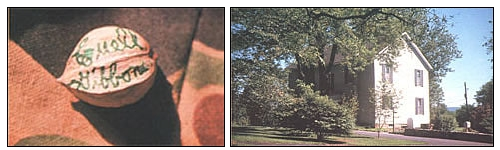

LEFT : A Gibbons-autographed hickory nut. Euell used to carry these in his pockets to give to folks who recognized him. RIGHT: The Gibbons homestead in Pennsylvania. It was from this base that the master forager/naturalist worked while preparing many of his books. (PHOTOS BY THE AUTHOR)